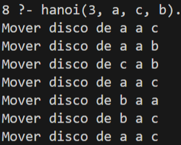
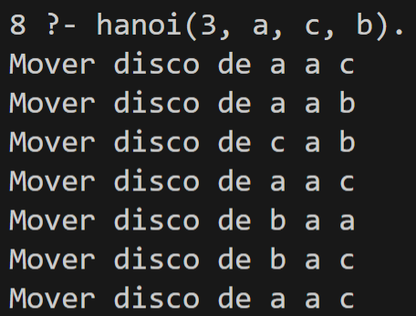

El objetivo de esta práctica fue explorar el paradigma lógico de programación mediante el lenguaje Prolog, implementando dos problemas clásicos de inteligencia artificial: las Torres de Hanoi y el problema del Mono y la Banana. A diferencia del paradigma funcional —explorado en la práctica anterior con Haskell—, en el paradigma lógico el programador no describe cómo resolver un problema, sino qué es verdad sobre él, dejando al motor de inferencia la tarea de encontrar la solución.
La implementación se realizó con SWI-Prolog, el intérprete de Prolog más utilizado en entornos académicos y de producción.
| Herramienta | Versión | Función |
|---|---|---|
| SWI-Prolog | 10.0.2 | Intérprete y compilador de Prolog |
| swipl | 10.0.2 | Comando de línea para ejecutar archivos .pl |
| VSCode | — | Editor de código con soporte de sintaxis Prolog |
| Concepto | Descripción |
|---|---|
| Hechos | Afirmaciones incondicionales sobre el dominio (padre(juan, maria).) |
| Reglas | Relaciones condicionales definidas mediante implicación (:-) |
| Consultas | Preguntas al motor de inferencia (?- hanoi(3, a, c, b).) |
| Unificación | Mecanismo por el que Prolog empareja variables con valores |
| Backtracking | Retroceso automático para explorar soluciones alternativas |
| Recursión | Principal mecanismo de control, equivalente a los bucles en otros paradigmas |
Los dos problemas se implementaron en archivos .pl separados y se ejecutaron directamente desde PowerShell:
practica4/
├── hanoi_mono.pl ← Torres de Hanoi
└── mono_banana.pl ← El mono y la banana
Para cargar y ejecutar cada archivo se utilizó el siguiente flujo en la terminal:
# Lanzar el intérprete cargando el archivo directamente
swipl hanoi_mono.pl
# Dentro del intérprete, ejecutar la consulta
?- hanoi(3, a, c, b).
Las Torres de Hanoi consisten en mover N discos de un poste de origen a uno de destino, usando un poste auxiliar, sin colocar nunca un disco más grande sobre uno más pequeño.
% Caso base: mover un solo disco
hanoi(1, Origen, Destino, _) :-
write('Mover disco de '), write(Origen),
write(' a '), writeln(Destino).
% Caso recursivo
hanoi(N, Origen, Destino, Aux) :-
N > 1,
N1 is N - 1,
hanoi(N1, Origen, Aux, Destino),
write('Mover disco de '), write(Origen),
write(' a '), writeln(Destino),
hanoi(N1, Aux, Destino, Origen).
El predicado hanoi/4 se define con dos cláusulas:
N = 1): si solo hay un disco, se imprime directamente el movimiento. El cuarto argumento —el poste auxiliar— se ignora con _.N > 1): se descompone el problema en tres subproblemas. Primero se mueven los N-1 discos superiores al auxiliar; luego se mueve el disco grande al destino; finalmente se mueven los N-1 discos del auxiliar al destino. La recursión termina garantizando que nunca se apila un disco mayor sobre uno menor.El número de movimientos generados sigue la fórmula 2ⁿ − 1, lo que para 3 discos produce exactamente 7 pasos.

La ejecución de ?- hanoi(3, a, c, b). generó los 7 movimientos correctos y terminó con true., confirmando que el predicado se satisfizo exitosamente.
Un mono se encuentra en la puerta de una habitación. En el centro del techo hay una banana colgada. Hay una caja en la ventana. El mono debe: caminar hacia la caja, empujarla al centro, subirse encima y agarrar la banana. Este problema modela la búsqueda en un espacio de estados.
El estado del mundo se representa como un término compuesto con cuatro componentes:
estado(PosicionMono, Altura, PosicionCaja, TieneBanana)
| Campo | Valores posibles | Significado |
|---|---|---|
PosicionMono |
puerta, ventana, centro |
Ubicación horizontal del mono |
Altura |
suelo, encima |
Si el mono está en el suelo o encima de la caja |
PosicionCaja |
puerta, ventana, centro |
Ubicación de la caja |
TieneBanana |
no, si |
Si el mono ya agarró la banana |
% Acción 1: caminar hacia donde está la caja
caminar(estado(_, suelo, Caja, Banana),
estado(Caja, suelo, Caja, Banana)) :-
write('Camina hacia la caja'), nl.
% Acción 2: empujar la caja al centro
mover_caja(estado(Pos, suelo, Pos, no),
estado(centro, suelo, centro, no)) :-
write('Empuja la caja al centro'), nl.
% Acción 3: subirse a la caja
subir(estado(centro, suelo, centro, no),
estado(centro, encima, centro, no)) :-
write('Sube a la caja'), nl.
% Acción 4: agarrar la banana
agarrar(estado(centro, encima, centro, no),
estado(centro, encima, centro, si)) :-
write('Agarra la banana!'), nl.
% Solución: cuatro acciones encadenadas
solucionar(E0) :-
caminar(E0, E1),
mover_caja(E1, E2),
subir(E2, E3),
agarrar(E3, _).
Cada acción se define como un predicado binario que recibe un estado y produce el estado resultante. Prolog resuelve solucionar/1 mediante encadenamiento hacia adelante: intenta unificar el estado inicial con las precondiciones de caminar/2; si tiene éxito, pasa el estado resultante a mover_caja/2, y así sucesivamente. Si alguna unificación falla, el motor aplica backtracking automáticamente para explorar caminos alternativos.
Un aspecto importante fue la corrección del predicado mover_caja: en la versión inicial se usaba estado(Caja, suelo, Caja, no), que exige que el mono ya esté en la misma posición que la caja. Como el estado inicial tiene al mono en puerta y la caja en ventana, la unificación fallaba y el predicado retornaba false. La solución fue agregar el paso caminar/2 antes de empujar, y usar Pos como variable de posición compartida para que Prolog unifique correctamente.

La ejecución de ?- solucionar(estado(puerta, suelo, ventana, no)). imprimió los cuatro pasos de la solución y terminó con true.
| Problema | Causa | Solución |
|---|---|---|
ERROR: Syntax error: Operator expected |
La consulta se escribió sin el punto final . |
Siempre terminar las consultas con . y presionar Enter |
ERROR: Unknown procedure: hanoi/4 |
El intérprete se lanzó sin cargar el archivo | Ejecutar swipl archivo.pl o usar [archivo]. dentro del intérprete |
false. en solucionar/1 |
mover_caja fallaba porque el mono y la caja estaban en posiciones distintas |
Agregar la acción caminar/2 como primer paso de la solución |
Warning: Singleton variables: [Pos] |
Variable Pos declarada pero no utilizada en el cuerpo de la cláusula |
Usar _ para variables que no se necesitan, o corregir la lógica |
| Característica | Imperativo / OO | Funcional (Haskell) | Lógico (Prolog) |
|---|---|---|---|
| Unidad básica | Instrucción / Clase | Función pura | Predicado / Cláusula |
| Control de flujo | Bucles, condicionales | Recursión, pattern matching | Unificación, backtracking |
| Estado | Mutable | Inmutable | No existe estado explícito |
| Cómo se programa | Cómo resolver | Qué transformar | Qué es verdad |
| Manejo de errores | Excepciones | Tipos (Maybe, Either) |
Fallo de unificación + backtracking |
Esta práctica demostró las características fundamentales del paradigma lógico frente a los paradigmas explorados anteriormente.
En Prolog no se escribe un algoritmo paso a paso: se declaran relaciones entre estados y el motor de inferencia se encarga de encontrar una secuencia de pasos que satisfaga la consulta. Esto hace que el código sea notablemente compacto —el problema completo de las Torres de Hanoi se resuelve en 8 líneas de Prolog— pero requiere comprender con precisión cómo funciona la unificación.
El problema del Mono y la Banana evidenció la importancia de la representación del estado: un error en las precondiciones de un predicado provoca que la unificación falle silenciosamente (false), sin un mensaje de error explícito. Esto exige depurar el código razonando sobre qué valores intenta unificar Prolog en cada paso, lo que es una habilidad diferente a la depuración tradicional.
Como área de oportunidad, la legibilidad del código Prolog disminuye rápidamente al crecer la cantidad de predicados. Para problemas más grandes, herramientas como el trazador de SWI-Prolog (trace/0) o el depurador gráfico serían esenciales para seguir el árbol de búsqueda.